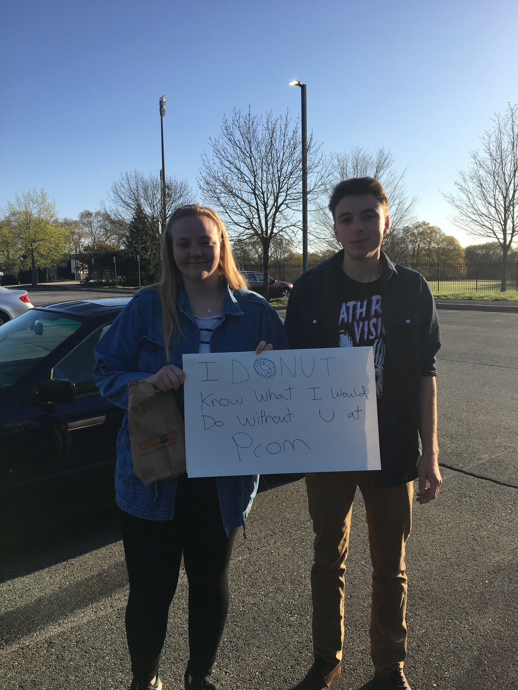

Sounds like the start of a low-budget movie, but this one actually turned out to be worth watching.
Technically, Liam and Alyssa have known each other since first grade. The only catch? Liam preferred to keep to his small circle, while Alyssa was busy talking to just about everyone. She even went as far as hounding Liam to say hi to her on the school bus, since they grew up in the same neighborhood. But despite their early encounters, their love story didn’t quite start there.
Over the years, Liam and Alyssa went their separate ways, living different lives but somehow always ending up with the same mutual friends. Then came senior year, when fate decided to step in — in the form of four parking spots.
By some stroke of luck, their friend group ended up parking in four spots right next to each other, turning the area into the unofficial morning hangout before school. Alyssa, who was almost always a little later than the boys, quickly became the target of some good-natured teasing over her parking technique.
The boys couldn’t understand why she would pull into her spot the way she did, leaving herself to back out later, when she could simply pull through from the other side and drive straight out. After enough commentary from the peanut gallery, Alyssa finally gave in and started pulling through. Her reward? A standing ovation from the boys every single morning.
And among those boys was Liam.
The usually quiet guy took a particular interest in teasing Alyssa, much to her surprise. He’d even go as far as beating her to her car just to flip her side mirrors in — a prank he found hilarious and Alyssa, well, not so much.
But somewhere between the teasing, the parking lot commentary, and the daily back-and-forth, something changed. The two started talking more and more, and what began with childhood encounters and a few parking spot jokes turned into something neither of them could have planned.